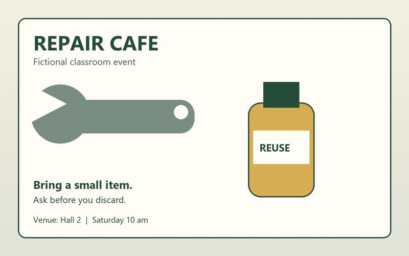

Export, reopen and compare media formats
Units 1–2 applications/data · A smaller file is useful only if it preserves the information needed by the client.
1600 × 1000 raster source · Editable vector mark · Blank operation record · Measured reference metadata


Worked image operation
- Keep the master unchanged. Open a copy in your approved image editor; record its 1600 × 1000 pixel dimensions.
- Resize with resampling to 800 × 500. Preserve the whole content and aspect ratio. This operation changes sampling; cropping would remove part of the content.
- Export PNG and JPEG delivery copies. For the JPEG reference, the command-line encoder used quality 75; application quality scales are not interchangeable.
- Reopen each exported file. Inspect dimensions, actual bytes, event text at 100% and visible edges. Record observed differences and whether the intended brief is met.
- Preserve the editable source. Renaming .jpg to .png does not perform conversion.
The reference exports below were actually produced and reopened with Pillow. These are measured results for these settings, not universal format size rankings.
| Download | Format | Pixels | Bytes |
|---|---|---|---|
| campaign-800.png | PNG | 800 × 500 | 111,188 |
| campaign-800.jpg | JPEG | 800 × 500 | 28,592 |
| campaign-800.bmp | BMP | 800 × 500 | 1,200,054 |
| campaign-800.tif | TIFF | 800 × 500 | 145,236 |
| campaign-800.gif | GIF | 800 × 500 | 76,247 |



Named formats and their limits
PNG is lossless for its stored pixels; JPEG is commonly lossy. GIF uses a palette, so reducing full-colour source values to that palette can lose information even though GIF's compression is lossless for the palette-indexed pixels. The supplied GIF is a comparison case, not a recommended photograph master. BMP is large here; TIFF's LZW encoding is lossless for its stored pixels. Neither extension establishes print suitability.
SVG retains editable vector paths in the supplied mark; embedded raster content would still have a finite resolution. CGM is a named legacy vector format used in technical workflows. No CGM conversion or target-application support is claimed here: if the client requires CGM, use an approved supporting application and validate a supplied sample before promising delivery.
Worked audio comparison
PCM WAV · 128 kb/s MP3 · 128 kb/s WMA
These delivery files were actually encoded from the same mix. WAV is a container; this reference uses 16-bit PCM at 44,100 samples/s. MP3 and this WMA use lossy encoding. Reopen and listen on your intended player; WMA support varies and the browser may not play it. Encoding delay and padding can make reported lossy durations differ slightly. A successful decode does not establish intelligibility.
Transcript and source script; the event information is also shown in the video workflow.
Guided then independent work
Predict which file is largest, then compare actual bytes. Explain why a compressed TIFF can still be larger than this PNG. For a new brief, export a 640 × 400 image below 60,000 bytes with all event text readable; choose and justify the format, record settings and revise if either check fails. There is no single required quality slider value.
Check reasoning
The reference BMP is largest at 1,200,054 bytes. Compression effectiveness depends on image content and encoding settings. The independent export must be measured; matching the size limit alone cannot compensate for unreadable information.
Original teaching assets; synthetic voice and invented event details. Reference generation checked 27 October 2026. Record your application's version and actual observations.